Human-Mammalian Brain - Basal Ganglia 10X snRNASeq analysis: clustering and annotations#
The basal ganglia (BG) are a system of interconnected brain structures that play a crucial role in motor control, learning, behavior, and emotion. With approximately 200 million neurons in the human basal ganglia alone, these structures are involved in a wide range of neurological processes and are implicated in numerous disorders affecting human health, including Parkinson’s disease, Huntington’s disease, and substance abuse disorders. To further understand the complexity of the basal ganglia, researchers have historically classified its neurons into various types based on their cytoarchitecture, connectivity, molecular profile, and functional properties. However, recent advancements in high-throughput transcriptomic profiling have revolutionized our ability to systematically categorize these cell types within species, while the maturation of machine learning technologies have enabled the integration of these taxonomies across species.
Our consensus basal ganglia cell type taxonomy is the result of iterative clustering and cross-species integration of transcriptomic data. The taxonomy encompasses neurons from key structures within the basal ganglia, including the caudate (Ca), putamen (Pu), nucleus accumbens (NAc), the external and internal segments of the globus pallidus (GPe, GPi), subthalamic nucleus (STN), and substantia nigra (SN). By combining data from multiple primate and rodent species, we have developed a consensus taxonomy that highlights both conserved and species-specific cell types. We validate our taxonomy through marker gene expression analysis, comparison with previously published taxonomies, and self-projection, ensuring the accuracy and robustness of each level in the taxonomic hierarchy.
You need to be connected to the internet to run this notebook or connected to a cache that has the HMBA-BG data downloaded already.
The notebook presented here shows quick visualizations from precomputed metadata in the atlas. For examples on accessing the expression matrices, specifically selecting genes from expression matrices, see the general_accessing_10x_snRNASeq_tutorial.ipynb tutorial/example. In a related tutorial, we also show how to access and use HMBA-BG gene expression data.
import pandas as pd
from pathlib import Path
import numpy as np
import matplotlib.pyplot as plt
from typing import Tuple, Optional
from abc_atlas_access.abc_atlas_cache.abc_project_cache import AbcProjectCache
We will interact with the data using the AbcProjectCache. This cache object downloads data requested by the user, tracks which files have already been downloaded to your local system, and serves the path to the requested data on disk. For metadata, the cache can also directly serve up a Pandas DataFrame. See the getting_started notebook for more details on using the cache including installing it if it has not already been.
Change the download_base variable to where you would like to download the data in your system.
download_base = Path('../../data/abc_atlas')
abc_cache = AbcProjectCache.from_cache_dir(
cache_dir=download_base,
)
abc_cache.current_manifest
/Users/chris.morrison/src/abc_atlas_access/src/abc_atlas_access/abc_atlas_cache/cloud_cache.py:665: UserWarning: The manifest version recorded as last used for this cache -- releases/20261031/manifest.json-- is not a valid manifest for this dataset. Loading latest version -- releases/20260711/manifest.json -- instead.
warnings.warn(msg, UserWarning)
/Users/chris.morrison/src/abc_atlas_access/src/abc_atlas_access/abc_atlas_cache/cloud_cache.py:697: OutdatedManifestWarning: You are loading
releases/20260711/manifest.json
which is newer than the most recent manifest file you have previously been working with
releases/20261031/manifest.json
It is possible that some data files have changed between these two data releases, which will force you to re-download those data files (currently downloaded files will not be overwritten). To continue using releases/20261031/manifest.json, run
type.load_manifest('releases/20261031/manifest.json')
warnings.warn(msg, OutdatedManifestWarning)
'releases/20261031/manifest.json'
Data overview#
We’ll quickly walk through the data we will be using in this notebook. The HMBA-BG 10X datasets are located across several directories listed in the ABCProjectCache. In this notebook, we will be looking at the Cross-Species HMBA-BG 10X dataset. These data combine the there species with an aligned set of ~16k across the species. We will be using data and metadata from the following directories:
HMBA-10xMultiome-BG-Cross-Species
HMBA-BG-taxonomy
Note that data for each individual species is available in the directory HMBA-10xMultiome-BG.
Below we list the data and metadata in the HMBA-10xMultiome-BG-Cross-Species dataset.
print("HMBA-10xMultiome-BG-Cross-Species: gene expression data (h5ad)\n\t", abc_cache.list_expression_matrix_files(directory='HMBA-10xMultiome-BG-Cross-Species'))
print("HMBA-10xMultiome-BG-Cross-Species: metadata (csv)\n\t", abc_cache.list_metadata_files(directory='HMBA-10xMultiome-BG-Cross-Species'))
HMBA-10xMultiome-BG-Cross-Species: gene expression data (h5ad)
['HMBA-10xMultiome-BG-Cross-Species/log2', 'HMBA-10xMultiome-BG-Cross-Species/raw']
HMBA-10xMultiome-BG-Cross-Species: metadata (csv)
['cell_metadata', 'donor', 'example_gene_expression', 'gene', 'library', 'value_sets']
We will also use metadata from the HMBA-BG taxonomy directory. Below is the list of available files:
print("HMBA-BG-taxonomy: metadata (csv)\n\t", abc_cache.list_metadata_files(directory='HMBA-BG-taxonomy'))
HMBA-BG-taxonomy: metadata (csv)
['abbreviation_term', 'cell_2d_embedding_coordinates', 'cell_to_cluster_membership', 'cluster', 'cluster_annotation_term', 'cluster_annotation_term_set', 'cluster_annotation_to_abbreviation_map', 'cluster_to_cluster_annotation_membership']
Cell metadata#
Essential cell metadata is stored as a CSV file that we load as a Pandas DataFrame. Each row represents one cell indexed by a cell label. The cell label is the concatenation of barcode and name of the sample. In this context, the sample is the barcoded cell sample that represents a single load into one port of the 10x Chromium. Note that cell barcodes are only unique within a single barcoded cell sample and that the same barcode can be reused. This metadata file contains cells across all species in the HMBA-BG dataset.
Each cell is associated with a library label, donor label, alignment_job_id, feature_matrix_label and dataset_label identifying which data package this cell is part of. This metadata file will be combined with other metadata files that ship with this package to add information associated with the donor, UMAP coordinates, cluster assignments, and more.
Below, we load the first of the metadata used in this tutorial. This represents the cell metadata for the Cross-Species dataset.
The command we use below both downloads the data if it is not already available in the local cache and loads the data as a Pandas DataFrame. This pattern of loading metadata is repeated throughout the tutorials.
cell = abc_cache.get_metadata_dataframe(
directory='HMBA-10xMultiome-BG-Cross-Species',
file_name='cell_metadata',
dtype={'cell_label': str}
).set_index('cell_label')
print("Number of cells = ", len(cell))
cell.head()
cell_metadata.csv: 100%|██████████| 449M/449M [00:22<00:00, 20.0MMB/s]
/Users/chris.morrison/src/abc_atlas_access/src/abc_atlas_access/abc_atlas_cache/abc_project_cache.py:643: DtypeWarning: Columns (0: alignment_job_id) have mixed types. Specify dtype option on import or set low_memory=False.
return pd.read_csv(path, **kwargs)
Number of cells = 1896133
| cell_barcode | donor_label | barcoded_cell_sample_label | library_label | alignment_job_id | doublet_score | umi_count | feature_matrix_label | dataset_label | abc_sample_id | |
|---|---|---|---|---|---|---|---|---|---|---|
| cell_label | ||||||||||
| AAACAGCCAAATGCCC-2362_A05 | AAACAGCCAAATGCCC | H24.30.001 | 2362_A05 | L8XR_240808_01_E02 | 8a4bf81821a0f425be8ba9c15dfad6b509020312 | 0.027027 | 15259.0 | HMBA-10xMultiome-BG-Cross-Species | HMBA-10xMultiome-BG-Cross-Species | 38447b19-a5dc-4eca-9021-56ae191e8809 |
| AAACAGCCAATTGAGA-2362_A05 | AAACAGCCAATTGAGA | H24.30.001 | 2362_A05 | L8XR_240808_01_E02 | 8a4bf81821a0f425be8ba9c15dfad6b509020312 | 0.054795 | 20645.0 | HMBA-10xMultiome-BG-Cross-Species | HMBA-10xMultiome-BG-Cross-Species | 3dc4dc1f-4b8a-4012-bb07-e3906ad70da0 |
| AAACAGCCAGCATGTC-2362_A05 | AAACAGCCAGCATGTC | H24.30.001 | 2362_A05 | L8XR_240808_01_E02 | 8a4bf81821a0f425be8ba9c15dfad6b509020312 | 0.000000 | 2551.0 | HMBA-10xMultiome-BG-Cross-Species | HMBA-10xMultiome-BG-Cross-Species | 291d6ebf-ca70-4d9d-8dde-10fa841dba93 |
| AAACAGCCATTGACAT-2362_A05 | AAACAGCCATTGACAT | H24.30.001 | 2362_A05 | L8XR_240808_01_E02 | 8a4bf81821a0f425be8ba9c15dfad6b509020312 | 0.000000 | 2341.0 | HMBA-10xMultiome-BG-Cross-Species | HMBA-10xMultiome-BG-Cross-Species | 12153419-9b49-4d5f-a10d-ddb7837a729d |
| AAACAGCCATTGTGGC-2362_A05 | AAACAGCCATTGTGGC | H24.30.001 | 2362_A05 | L8XR_240808_01_E02 | 8a4bf81821a0f425be8ba9c15dfad6b509020312 | 0.027397 | 8326.0 | HMBA-10xMultiome-BG-Cross-Species | HMBA-10xMultiome-BG-Cross-Species | 5716499d-d69d-489e-b4ed-6841b6ba051d |
We can use pandas groupby function to see how many unique items are associated for each field and list them out if the number of unique items is small.
def print_column_info(df):
for c in df.columns:
grouped = df[[c]].groupby(c).count()
members = ''
if len(grouped) < 30:
members = str(list(grouped.index))
print("Number of unique %s = %d %s" % (c, len(grouped), members))
print_column_info(cell)
Number of unique cell_barcode = 680274
Number of unique donor_label = 22 ['CJ23.56.002', 'CJ23.56.003', 'CJ24.56.001', 'CJ24.56.004', 'H18.30.001', 'H19.30.004', 'H20.30.001', 'H20.30.002', 'H21.30.004', 'H23.30.001', 'H24.30.001', 'H24.30.003', 'H24.30.004', 'H24.30.007', 'Q19.26.010', 'Q21.26.002', 'Q21.26.010', 'QM21.26.001', 'QM21.26.003', 'QM23.50.001', 'QM23.50.002', 'QM23.50.003']
Number of unique barcoded_cell_sample_label = 417
Number of unique library_label = 417
Number of unique alignment_job_id = 303
Number of unique doublet_score = 1422
Number of unique umi_count = 85704
Number of unique feature_matrix_label = 1 ['HMBA-10xMultiome-BG-Cross-Species']
Number of unique dataset_label = 1 ['HMBA-10xMultiome-BG-Cross-Species']
Number of unique abc_sample_id = 1896133
Donor and Library metadata#
The first two associated metadata we load are the donor and library tables. The donor table contains species, sex, and age information. The library table contains information on 10X methods and brain region of interest the tissue was extracted from.
donor = abc_cache.get_metadata_dataframe(
directory='HMBA-10xMultiome-BG-Cross-Species',
file_name='donor'
).set_index('donor_label')
donor.head()
donor.csv: 100%|██████████| 2.01k/2.01k [00:00<00:00, 26.5kMB/s]
| donor_species | species_scientific_name | species_genus | donor_sex | donor_age | donor_age_value | donor_age_unit | donor_nhash_id | |
|---|---|---|---|---|---|---|---|---|
| donor_label | ||||||||
| QM23.50.003 | NCBITaxon:9544 | Macaca mulatta | Macaque | Male | 6 yrs | 6.0 | years | DO-HHOI8925 |
| QM21.26.001 | NCBITaxon:9544 | Macaca mulatta | Macaque | Male | 6 yrs | 6.0 | years | DO-MCUM5797 |
| Q19.26.010 | NCBITaxon:9544 | Macaca mulatta | Macaque | Female | 10 yrs | 10.0 | years | DO-XYBX6133 |
| H24.30.003 | NCBITaxon:9606 | Homo sapiens | Human | Female | 19 yrs | 19.0 | years | DO-OSUT8071 |
| H21.30.004 | NCBITaxon:9606 | Homo sapiens | Human | Male | 57 yrs | 57.0 | years | DO-XWIW2465 |
library = abc_cache.get_metadata_dataframe(
directory='HMBA-10xMultiome-BG-Cross-Species',
file_name='library'
).set_index('library_label')
library.head()
library.csv: 100%|██████████| 109k/109k [00:00<00:00, 709kMB/s]
| library_method | library_nhash_id | barcoded_cell_sample_label | enrichment_population | cell_specimen_type | parcellation_term_identifier | region_of_interest_name | region_of_interest_label | anatomical_division_label | donor_label | specimen_dissected_roi_label | specimen_dissected_roi_nhash_id | slab_label | slab_nhash_id | RNA_aliquot_nhash_id | ATAC_aliquot_nhash_id_nimp | |
|---|---|---|---|---|---|---|---|---|---|---|---|---|---|---|---|---|
| library_label | ||||||||||||||||
| L8XR_240222_21_H03 | 10xMultiome;GEX | LI-LXVEUM541384 | 2077_A02 | 50% NeuN+, 35% OLIG2-, 15% OLIG2+ | Nuclei | DHBA:11538 | caudal putamen | PuC | Basal ganglia | QM23.50.003 | QM23.50.003.CX.08.PuC.01 | RI-KHNKLI464991 | QM23.50.003.CX.08 | SL-HHOIKA892526 | LA-LXVEUM541384PNNKKM266702 | LA-TARYWR624745BBGGCK580995 |
| L8XR_220428_02_A05 | 10xMultiome;GEX | LI-RNSEIM617503 | 1224_A04 | 10% NeuN+, 49% OLIG2-, 25% OLIG2+, 16% Nurr1+ | Nuclei | DHBA:12261 | ventral tegmental area | VTA | Basal ganglia | QM21.26.001 | Q21.26.001.CX44.SN.001 | RI-VYYVBV771518 | QM21.26.001.CX.44 | SL-MCUMVX579790 | LA-RNSEIM617503BZDAJF787974 | LA-PIQRSO826916FCJCKL744478 |
| L8XR_220428_02_C04 | 10xMultiome;GEX | LI-IHJMHI295497 | 1222_A02 | 60% NeuN+, 27% OLIG2-, 13% OLIG2+ | Nuclei | DHBA:10466 | subthalamic nucleus | STH | Basal ganglia | Q19.26.010 | Q19.26.010.CX42.STH.001 | RI-IMHMMG443226 | Q19.26.010.CX.42 | SL-XYBXSZ613335 | LA-IHJMHI295497BZDAJF787974 | LA-QSKILG275772FCJCKL744478 |
| L8XR_240705_01_A06 | 10xMultiome;GEX | LI-EBDPMM615369 | 2305_E01 | 50% NeuN+, 35% OLIG2-, 15% OLIG2+ | Nuclei | DHBA:11537 | rostral putamen | PuR | Basal ganglia | H24.30.003 | H24.30.003.CX.14.PuR.01 | RI-XZUAVY396052 | H24.30.003.CX.14 | SL-OSUTGV807183 | LA-EBDPMM615369PUROBV238013 | LA-IBDPMP801373NYZVTV539505 |
| L8XR_240919_21_B05 | 10xMultiome;GEX | LI-GUPMNR700763 | 2453_A02 | 70% NeuN+, 20% OLIG2-, 10% OLIG2+ | Nuclei | DHBA:10345 | Ventral pallidus | VeP | Basal ganglia | H21.30.004 | H21.30.004.CX.18.VEP.01 | RI-XVBWXT892729 | H21.30.004.CX.18 | SL-XWIWGI246585 | LA-GUPMNR700763BUYXYZ657714 | LA-FBDLSM349285HDFNUO141234 |
We combine these into an extended cell metadata table.
cell_extended = cell.join(donor, on='donor_label')
cell_extended = cell_extended.join(library, on='library_label', rsuffix='_library_table')
del cell
Below we use a pandas groupby to show the number of cells from each species.
cell_extended.groupby('species_genus')[['feature_matrix_label']].count()
| feature_matrix_label | |
|---|---|
| species_genus | |
| Human | 1034819 |
| Macaque | 548281 |
| Marmoset | 313033 |
We can also use the groupby function to show the number of cells in each region of interest extracted from the BG.
cell_extended.groupby('region_of_interest_name')[['region_of_interest_label']].count()
| region_of_interest_label | |
|---|---|
| region_of_interest_name | |
| Ventral pallidus | 36512 |
| body of caudate | 187160 |
| brain | 313033 |
| caudal putamen | 166106 |
| caudate nucleus | 27672 |
| core of nucleus accumbens | 19192 |
| external segment of globus pallidus | 204481 |
| globus pallidus | 4567 |
| head of caudate | 132071 |
| internal segment of globus pallidus | 131680 |
| nucleus accumbens | 149878 |
| peri-caudate ependymal and subependymal zone | 8376 |
| posteroventral putamen | 74232 |
| putamen | 34951 |
| rostral putamen | 196244 |
| shell of nucleus accumbens | 9385 |
| substantia nigra | 33156 |
| subthalamic nucleus | 58570 |
| tail of caudate | 87073 |
| ventral tegmental area | 21794 |
Adding color and feature order#
Each major feature in the donor and library table is associated with unique colors and an ordering with the set of values. Below we load the value_sets DataFrame which is a mapping from the various value in the donor and species tables to those colors and orderings. We incorporate these values into the cell metadata table.
value_sets = abc_cache.get_metadata_dataframe(
directory='HMBA-10xMultiome-BG-Cross-Species',
file_name='value_sets'
).set_index('label')
value_sets.head()
value_sets.csv: 100%|██████████| 4.16k/4.16k [00:00<00:00, 24.6kMB/s]
| table | field | description | order | external_identifier | parent_label | color_hex_triplet | |
|---|---|---|---|---|---|---|---|
| label | |||||||
| Female | donor | donor_sex | Female | 1 | NaN | NaN | #565353 |
| Male | donor | donor_sex | Male | 2 | NaN | NaN | #ADC4C3 |
| Human | donor | species_genus | Human | 1 | NCBITaxon:9605 | NaN | #377eb8 |
| Macaque | donor | species_genus | Macaque | 2 | NCBITaxon:9539 | NaN | #4daf4a |
| Marmoset | donor | species_genus | Marmoset | 3 | NCBITaxon:9481 | NaN | #FF5F5D |
We define a convince function to add colors for the various values in the data (e.g. unique region of interest or donor sex values).
def extract_value_set(cell_metadata_df: pd.DataFrame, input_value_set: pd.DataFrame, input_value_set_label: str):
"""Add color and order columns to the cell metadata dataframe based on the input
value set.
Columns are added as {input_value_set_label}_color and {input_value_set_label}_order.
Parameters
----------
cell_metadata_df : pd.DataFrame
DataFrame containing cell metadata.
input_value_set : pd.DataFrame
DataFrame containing the value set information.
input_value_set_label : str
The the column name to extract color and order information for. will be added to the cell metadata.
"""
cell_metadata_df[f'{input_value_set_label}_color'] = input_value_set[
input_value_set['field'] == input_value_set_label
].loc[cell_metadata_df[input_value_set_label]]['color_hex_triplet'].values
cell_metadata_df[f'{input_value_set_label}_order'] = input_value_set[
input_value_set['field'] == input_value_set_label
].loc[cell_metadata_df[input_value_set_label]]['order'].values
Use our function to add the relevant color and order columns to our cell_metadata table.
# Add region of interest color and order
extract_value_set(cell_extended, value_sets, 'region_of_interest_label')
# Add species common name color and order
extract_value_set(cell_extended, value_sets, 'species_genus')
# Add species scientific name color and order
extract_value_set(cell_extended, value_sets, 'species_scientific_name')
# Add donor sex color and order
extract_value_set(cell_extended, value_sets, 'donor_sex')
cell_extended.head()
| cell_barcode | donor_label | barcoded_cell_sample_label | library_label | alignment_job_id | doublet_score | umi_count | feature_matrix_label | dataset_label | abc_sample_id | ... | RNA_aliquot_nhash_id | ATAC_aliquot_nhash_id_nimp | region_of_interest_label_color | region_of_interest_label_order | species_genus_color | species_genus_order | species_scientific_name_color | species_scientific_name_order | donor_sex_color | donor_sex_order | |
|---|---|---|---|---|---|---|---|---|---|---|---|---|---|---|---|---|---|---|---|---|---|
| cell_label | |||||||||||||||||||||
| AAACAGCCAAATGCCC-2362_A05 | AAACAGCCAAATGCCC | H24.30.001 | 2362_A05 | L8XR_240808_01_E02 | 8a4bf81821a0f425be8ba9c15dfad6b509020312 | 0.027027 | 15259.0 | HMBA-10xMultiome-BG-Cross-Species | HMBA-10xMultiome-BG-Cross-Species | 38447b19-a5dc-4eca-9021-56ae191e8809 | ... | LA-LYWUSS193215JGVXQQ169778 | LA-XXUAAR612733RODDAG166614 | #53DB33 | 15 | #377eb8 | 1 | #377eb8 | 1 | #ADC4C3 | 2 |
| AAACAGCCAATTGAGA-2362_A05 | AAACAGCCAATTGAGA | H24.30.001 | 2362_A05 | L8XR_240808_01_E02 | 8a4bf81821a0f425be8ba9c15dfad6b509020312 | 0.054795 | 20645.0 | HMBA-10xMultiome-BG-Cross-Species | HMBA-10xMultiome-BG-Cross-Species | 3dc4dc1f-4b8a-4012-bb07-e3906ad70da0 | ... | LA-LYWUSS193215JGVXQQ169778 | LA-XXUAAR612733RODDAG166614 | #53DB33 | 15 | #377eb8 | 1 | #377eb8 | 1 | #ADC4C3 | 2 |
| AAACAGCCAGCATGTC-2362_A05 | AAACAGCCAGCATGTC | H24.30.001 | 2362_A05 | L8XR_240808_01_E02 | 8a4bf81821a0f425be8ba9c15dfad6b509020312 | 0.000000 | 2551.0 | HMBA-10xMultiome-BG-Cross-Species | HMBA-10xMultiome-BG-Cross-Species | 291d6ebf-ca70-4d9d-8dde-10fa841dba93 | ... | LA-LYWUSS193215JGVXQQ169778 | LA-XXUAAR612733RODDAG166614 | #53DB33 | 15 | #377eb8 | 1 | #377eb8 | 1 | #ADC4C3 | 2 |
| AAACAGCCATTGACAT-2362_A05 | AAACAGCCATTGACAT | H24.30.001 | 2362_A05 | L8XR_240808_01_E02 | 8a4bf81821a0f425be8ba9c15dfad6b509020312 | 0.000000 | 2341.0 | HMBA-10xMultiome-BG-Cross-Species | HMBA-10xMultiome-BG-Cross-Species | 12153419-9b49-4d5f-a10d-ddb7837a729d | ... | LA-LYWUSS193215JGVXQQ169778 | LA-XXUAAR612733RODDAG166614 | #53DB33 | 15 | #377eb8 | 1 | #377eb8 | 1 | #ADC4C3 | 2 |
| AAACAGCCATTGTGGC-2362_A05 | AAACAGCCATTGTGGC | H24.30.001 | 2362_A05 | L8XR_240808_01_E02 | 8a4bf81821a0f425be8ba9c15dfad6b509020312 | 0.027397 | 8326.0 | HMBA-10xMultiome-BG-Cross-Species | HMBA-10xMultiome-BG-Cross-Species | 5716499d-d69d-489e-b4ed-6841b6ba051d | ... | LA-LYWUSS193215JGVXQQ169778 | LA-XXUAAR612733RODDAG166614 | #53DB33 | 15 | #377eb8 | 1 | #377eb8 | 1 | #ADC4C3 | 2 |
5 rows × 42 columns
UMAP spatial embedding#
Now that we’ve merged our donor and library metadata into the main cells data, our next step is to plot these values in the Uniform Manifold Approximation and Projection (UMAP) for cells in the dataset. The UMAP is a dimension reduction technique that can be used for visualizing and exploring large-dimension datasets.
Below we load this 2-D embedding for a sub selection of our cells and merge the x-y coordinates into the extended cell metadata we are creating.
cell_2d_embedding_coordinates = abc_cache.get_metadata_dataframe(
directory='HMBA-BG-taxonomy',
file_name='cell_2d_embedding_coordinates'
).set_index('cell_label')
cell_2d_embedding_coordinates.head()
cell_2d_embedding_coordinates.csv: 100%|██████████| 86.7M/86.7M [00:21<00:00, 4.02MMB/s]
| x | y | |
|---|---|---|
| cell_label | ||
| AAACAGCCAAATGCCC-2362_A05 | 0.452302 | 2.938630 |
| AAACAGCCAATTGAGA-2362_A05 | 0.051495 | 16.282684 |
| AAACAGCCAGCATGTC-2362_A05 | -1.233702 | 8.666612 |
| AAACAGCCATTGACAT-2362_A05 | 0.517126 | 15.368365 |
| AAACAGCCATTGTGGC-2362_A05 | -3.697715 | -1.647361 |
cell_extended = cell_extended.join(cell_2d_embedding_coordinates)
cell_extended = cell_extended.sample(frac=1)
del cell_2d_embedding_coordinates
We define a small helper function plot_umap to visualize the cells on the UMAP. In the examples below we will plot associated cell information colorized by dissection donor species, sex, and region of interest.
def plot_umap(
xx: np.ndarray,
yy: np.ndarray,
cc: np.ndarray = None,
val: np.ndarray = None,
fig_width: float = 8,
fig_height: float = 8,
cmap: Optional[plt.Colormap] = None,
labels: np.ndarray = None,
term_orders: np.ndarray = None,
colorbar: bool = False,
sizes: np.ndarray = None
) -> Tuple[plt.Figure, plt.Axes]:
"""
Plot a scatter plot of the UMAP coordinates.
Parameters
----------
xx : array-like
x-coordinates of the points to plot.
yy : array-like
y-coordinates of the points to plot.
cc : array-like, optional
colors of the points to plot. If None, the points will be colored by the values in `val`.
val : array-like, optional
values of the points to plot. If None, the points will be colored by the values in `cc`.
fig_width : float, optional
width of the figure in inches. Default is 8.
fig_height : float, optional
height of the figure in inches. Default is 8.
cmap : str, optional
colormap to use for coloring the points. If None, the points will be colored by the values in `cc`.
labels : array-like, optional
labels for the points to plot. If None, no labels will be added to the plot.
term_orders : array-like, optional
order of the labels for the legend. If None, the labels will be ordered by their appearance in `labels`.
colorbar : bool, optional
whether to add a colorbar to the plot. Default is False.
sizes : array-like, optional
sizes of the points to plot. If None, all points will have the same size.
"""
if sizes is None:
sizes = 1
fig, ax = plt.subplots()
fig.set_size_inches(fig_width, fig_height)
if cmap is not None:
scatt = ax.scatter(xx, yy, c=val, s=0.5, marker='.', cmap=cmap, alpha=sizes)
elif cc is not None:
scatt = ax.scatter(xx, yy, c=cc, s=0.5, marker='.', alpha=sizes)
if labels is not None:
from matplotlib.patches import Rectangle
unique_label_colors = (labels + ',' + cc).unique()
unique_labels = np.array([label_color.split(',')[0] for label_color in unique_label_colors])
unique_colors = np.array([label_color.split(',')[1] for label_color in unique_label_colors])
if term_orders is not None:
unique_order = term_orders.unique()
term_order = np.argsort(unique_order)
unique_labels = unique_labels[term_order]
unique_colors = unique_colors[term_order]
rects = []
for color in unique_colors:
rects.append(Rectangle((0, 0), 1, 1, fc=color))
legend = ax.legend(rects, unique_labels, loc=1)
# ax.add_artist(legend)
if colorbar:
fig.colorbar(scatt, ax=ax)
return fig, ax
Plot the various donor and library metadata available.
fig, ax = plot_umap(
cell_extended['x'],
cell_extended['y'],
cc=cell_extended['species_genus_color'],
labels=cell_extended['species_genus'],
term_orders=cell_extended['species_genus_order'],
fig_width=12,
fig_height=12
)
res = ax.set_title("species_genus")
plt.show()
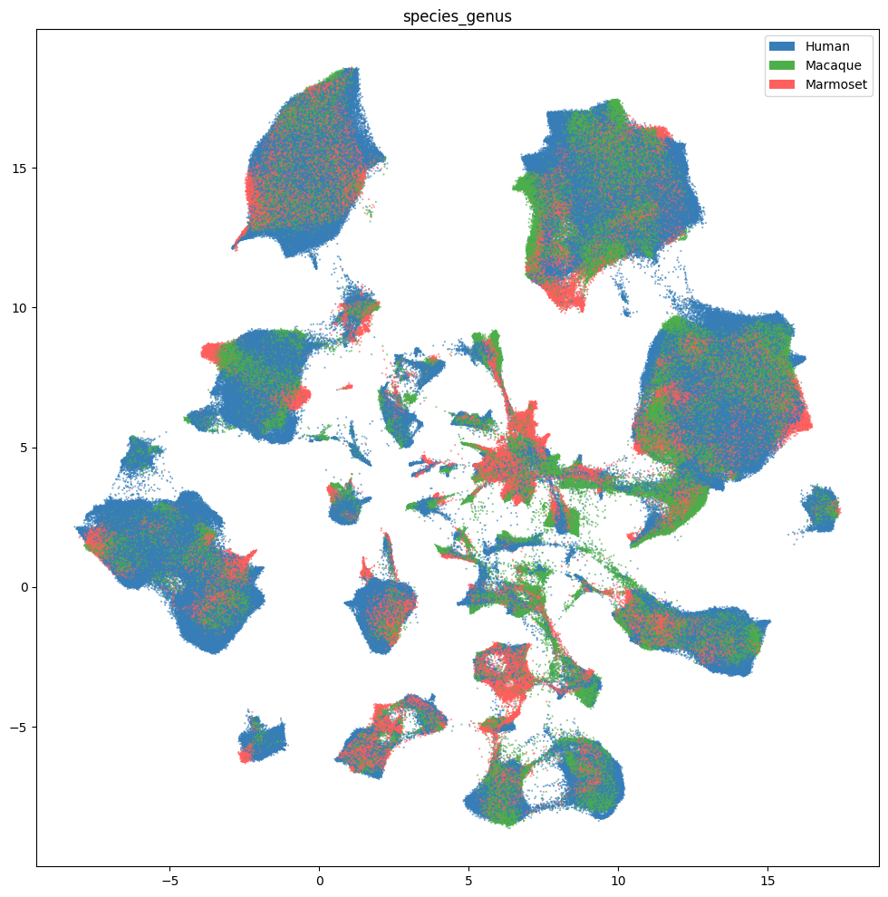
fig, ax = plot_umap(
cell_extended['x'],
cell_extended['y'],
cc=cell_extended['species_scientific_name_color'],
labels=cell_extended['species_scientific_name'],
term_orders=cell_extended['species_scientific_name_order'],
fig_width=12,
fig_height=12
)
res = ax.set_title("species_scientific_name")
plt.show()
fig, ax = plot_umap(
cell_extended['x'],
cell_extended['y'],
cc=cell_extended['donor_sex_color'],
labels=cell_extended['donor_sex'],
term_orders=cell_extended['donor_sex_order'],
fig_width=12,
fig_height=12
)
res = ax.set_title("donor_sex")
plt.show()
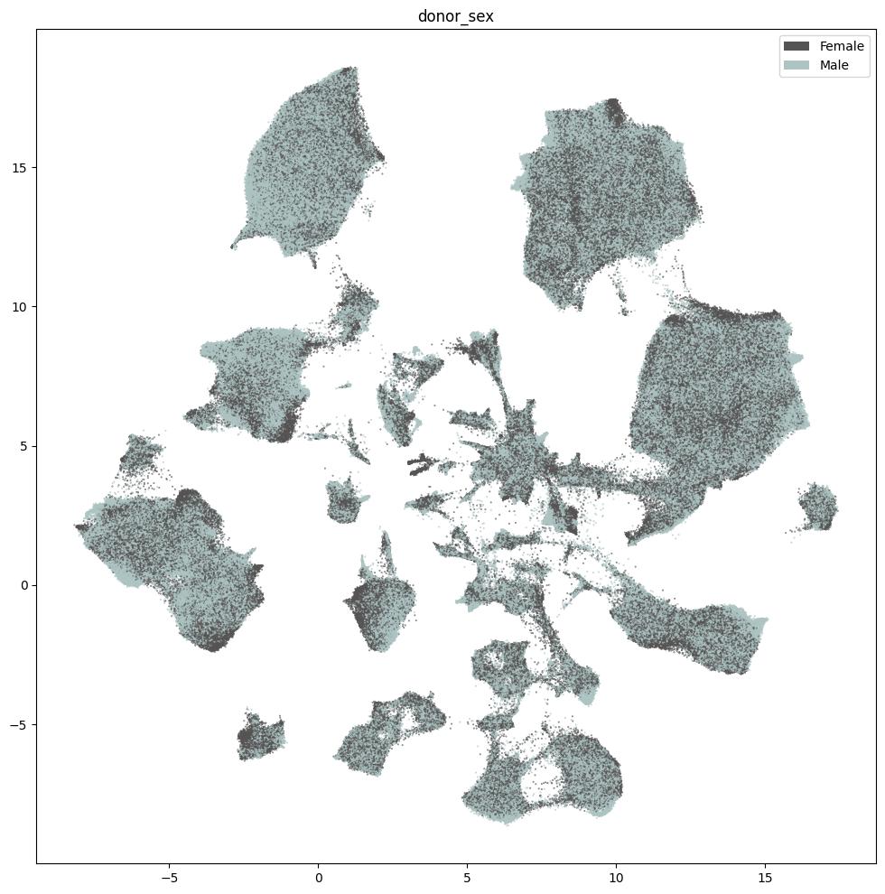
Below we show the region of interest for the three species. Note, however, that Marmoset does not have fine grained ROIs available and is marked as Br - Brain.
fig, ax = plot_umap(
cell_extended['x'],
cell_extended['y'],
cc=cell_extended['region_of_interest_label_color'],
labels=cell_extended['region_of_interest_label'],
term_orders=cell_extended['region_of_interest_label_order'],
fig_width=12,
fig_height=12
)
res = ax.set_title("region_of_interest_label")
plt.show()
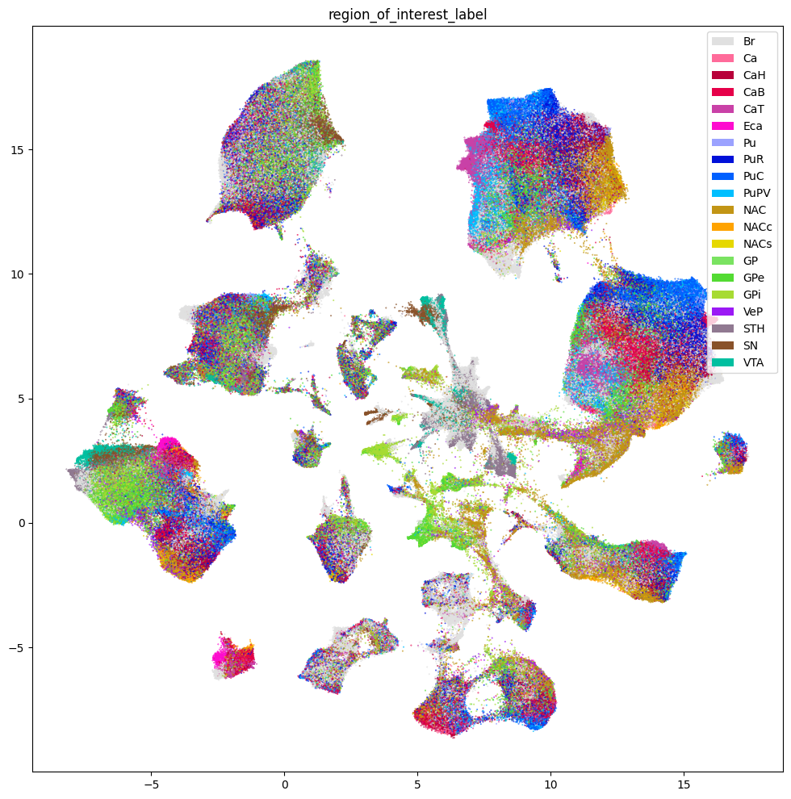
Taxonomy Information#
The final set of metadata we load into our extended cell metadata file maps the cells into their assigned cluster in the taxonomy. We additionally load metadata for the clusters and compute useful information, such as the number of cells in each taxon at each level of the taxonomy.
First, we load information associated with each Cluster in the taxonomy. This includes a useful alias value for each cluster as well as the number of cells in each cluster.
cluster = abc_cache.get_metadata_dataframe(
directory='HMBA-BG-taxonomy',
file_name='cluster',
dtype={'number_of_cells': 'Int64'}
).rename(columns={'label': 'cluster_annotation_term_label'}).set_index('cluster_annotation_term_label')
cluster.head()
cluster.csv: 100%|██████████| 79.9k/79.9k [00:00<00:00, 394kMB/s]
| cluster_alias | number_of_cells | |
|---|---|---|
| cluster_annotation_term_label | ||
| CS20250428_CLUST_0161 | Human-143 | 91 |
| CS20250428_CLUST_0162 | Human-145 | 1783 |
| CS20250428_CLUST_0163 | Human-146 | 172 |
| CS20250428_CLUST_0164 | Human-149 | 2649 |
| CS20250428_CLUST_0165 | Human-150 | 1359 |
Next, we load the table that describes the levels in the taxonomy from Neighborhood at the highest to Cluster at the lowest level.
cluster_annotation_term_set = abc_cache.get_metadata_dataframe(
directory='HMBA-BG-taxonomy',
file_name='cluster_annotation_term_set'
).rename(columns={'label': 'cluster_annotation_term_label'})
cluster_annotation_term_set
cluster_annotation_term_set.csv: 100%|██████████| 223/223 [00:00<00:00, 2.28kMB/s]
| cluster_annotation_term_label | name | description | order | |
|---|---|---|---|---|
| 0 | CCN20250428_LEVEL_0 | Neighborhood | Neighborhood | 0 |
| 1 | CCN20250428_LEVEL_1 | Class | Class | 1 |
| 2 | CCN20250428_LEVEL_2 | Subclass | Subclass | 2 |
| 3 | CCN20250428_LEVEL_3 | Group | Group | 3 |
| 4 | CCN20250428_LEVEL_4 | Cluster | Cluster | 4 |
For the clusters, we load information on the annotations for each cluster. This also includes the term order and color information which we will use to plot later.
cluster_annotation_term = abc_cache.get_metadata_dataframe(
directory='HMBA-BG-taxonomy',
file_name='cluster_annotation_term',
).rename(columns={'label': 'cluster_annotation_term_label'}).set_index('cluster_annotation_term_label')
cluster_annotation_term.head()
cluster_annotation_term.csv: 100%|██████████| 207k/207k [00:00<00:00, 921kMB/s]
| name | cluster_annotation_term_set_label | cluster_annotation_term_set_name | color_hex_triplet | term_order | term_set_order | parent_term_label | parent_term_name | parent_term_set_label | |
|---|---|---|---|---|---|---|---|---|---|
| cluster_annotation_term_label | |||||||||
| CS20250428_NEIGH_0001 | Nonneuron | CCN20250428_LEVEL_0 | Neighborhood | #f2ca7d | 1 | 0 | NaN | NaN | NaN |
| CS20250428_NEIGH_0002 | Subpallium GABA | CCN20250428_LEVEL_0 | Neighborhood | #19613b | 3 | 0 | NaN | NaN | NaN |
| CS20250428_NEIGH_0003 | Subpallium GABA-Glut | CCN20250428_LEVEL_0 | Neighborhood | #7e1d19 | 4 | 0 | NaN | NaN | NaN |
| CS20250428_NEIGH_0000 | Glut Sero Dopa | CCN20250428_LEVEL_0 | Neighborhood | #91f4bb | 2 | 0 | NaN | NaN | NaN |
| CS20250428_CLASS_0010 | OPC-Oligo | CCN20250428_LEVEL_1 | Class | #8605d4 | 3 | 1 | CS20250428_NEIGH_0001 | Nonneuron | CCN20250428_LEVEL_0 |
Finally, we load the cluster to cluster annotation membership table. Each row in this table is a mapping between the clusters and every level of the taxonomy it belongs to, including itself. We’ll use this table in a groupbys to allow us to count up the number of clusters at each taxonomy level and sum the number of cells in each taxon in the taxonomy a all levels.
cluster_to_cluster_annotation_membership = abc_cache.get_metadata_dataframe(
directory='HMBA-BG-taxonomy',
file_name='cluster_to_cluster_annotation_membership',
).set_index('cluster_annotation_term_label')
membership_with_cluster_info = cluster_to_cluster_annotation_membership.join(
cluster.reset_index().set_index('cluster_alias')[['number_of_cells']],
on='cluster_alias'
)
membership_with_cluster_info = membership_with_cluster_info.join(cluster_annotation_term, rsuffix='_anno_term').reset_index()
membership_groupby = membership_with_cluster_info.groupby(
['cluster_alias', 'cluster_annotation_term_set_name']
)
membership_with_cluster_info.head()
cluster_to_cluster_annotation_membership.csv: 100%|██████████| 569k/569k [00:00<00:00, 1.63MMB/s]
| cluster_annotation_term_label | Unnamed: 0 | cluster_annotation_term_set_name | cluster_annotation_term_name | cluster_alias | cluster_annotation_term_set_label | number_of_cells | name | cluster_annotation_term_set_label_anno_term | cluster_annotation_term_set_name_anno_term | color_hex_triplet | term_order | term_set_order | parent_term_label | parent_term_name | parent_term_set_label | |
|---|---|---|---|---|---|---|---|---|---|---|---|---|---|---|---|---|
| 0 | CS20250428_NEIGH_0001 | 0 | Neighborhood | Nonneuron | Human-7 | CCN20250428_LEVEL_0 | 1893 | Nonneuron | CCN20250428_LEVEL_0 | Neighborhood | #f2ca7d | 1 | 0 | NaN | NaN | NaN |
| 1 | CS20250428_NEIGH_0001 | 1 | Neighborhood | Nonneuron | Human-14 | CCN20250428_LEVEL_0 | 58596 | Nonneuron | CCN20250428_LEVEL_0 | Neighborhood | #f2ca7d | 1 | 0 | NaN | NaN | NaN |
| 2 | CS20250428_NEIGH_0001 | 2 | Neighborhood | Nonneuron | Human-28 | CCN20250428_LEVEL_0 | 1492 | Nonneuron | CCN20250428_LEVEL_0 | Neighborhood | #f2ca7d | 1 | 0 | NaN | NaN | NaN |
| 3 | CS20250428_NEIGH_0001 | 3 | Neighborhood | Nonneuron | Human-31 | CCN20250428_LEVEL_0 | 3350 | Nonneuron | CCN20250428_LEVEL_0 | Neighborhood | #f2ca7d | 1 | 0 | NaN | NaN | NaN |
| 4 | CS20250428_NEIGH_0001 | 4 | Neighborhood | Nonneuron | Human-143 | CCN20250428_LEVEL_0 | 91 | Nonneuron | CCN20250428_LEVEL_0 | Neighborhood | #f2ca7d | 1 | 0 | NaN | NaN | NaN |
From the membership table, we create three tables via a groupby. First the name of each cluster and its parents.
# term_sets = abc_cache.get_metadata_dataframe(directory='WHB-taxonomy', file_name='cluster_annotation_term_set').set_index('label')
cluster_details = membership_groupby['cluster_annotation_term_name'].first().unstack()
cluster_details = cluster_details[cluster_annotation_term_set['name']] # order columns
cluster_details.fillna('Other', inplace=True)
cluster_details.sort_values(['Neighborhood', 'Class', 'Subclass', 'Group', 'Cluster'], inplace=True)
cluster_details.head()
| cluster_annotation_term_set_name | Neighborhood | Class | Subclass | Group | Cluster |
|---|---|---|---|---|---|
| cluster_alias | |||||
| Human-128 | Glut Sero Dopa | F M Glut | F Glut | BF SKOR1 Glut | Human-128 |
| Human-129 | Glut Sero Dopa | F M Glut | F Glut | BF SKOR1 Glut | Human-129 |
| Human-130 | Glut Sero Dopa | F M Glut | F Glut | BF SKOR1 Glut | Human-130 |
| Human-423 | Glut Sero Dopa | F M Glut | F Glut | BF SKOR1 Glut | Human-423 |
| Human-426 | Glut Sero Dopa | F M Glut | F Glut | BF SKOR1 Glut | Human-426 |
Next the plotting order of each of the clusters and their parents.
cluster_order = membership_groupby['term_order'].first().unstack()
cluster_order.sort_values(['Neighborhood', 'Class', 'Subclass', 'Group', 'Cluster'], inplace=True)
cluster_order.rename(
columns={'Neighborhood': 'Neighborhood_order',
'Class': 'Class_order',
'Subclass': 'Subclass_order',
'Group': 'Group_order',
'Cluster': 'Cluster_order'},
inplace=True
)
cluster_order.head()
| cluster_annotation_term_set_name | Class_order | Cluster_order | Group_order | Neighborhood_order | Subclass_order |
|---|---|---|---|---|---|
| cluster_alias | |||||
| Human-143 | 1 | 0 | 1 | 1 | 1 |
| Human-145 | 1 | 1 | 1 | 1 | 1 |
| Human-146 | 1 | 2 | 1 | 1 | 1 |
| Human-149 | 1 | 3 | 1 | 1 | 1 |
| Human-150 | 1 | 4 | 1 | 1 | 1 |
Finally, the colors we will use to plot for each of the unique taxons at all levels.
cluster_colors = membership_groupby['color_hex_triplet'].first().unstack()
cluster_colors = cluster_colors[cluster_annotation_term_set['name']]
cluster_colors.sort_values(['Neighborhood', 'Class', 'Subclass', 'Group', 'Cluster'], inplace=True)
cluster_colors.head()
| cluster_annotation_term_set_name | Neighborhood | Class | Subclass | Group | Cluster |
|---|---|---|---|---|---|
| cluster_alias | |||||
| Marmoset-323 | #19613b | #26e8bb | #1bc06a | #fc2b80 | #00d86e |
| Marmoset-307 | #19613b | #26e8bb | #1bc06a | #fc2b80 | #0454b2 |
| Marmoset-325 | #19613b | #26e8bb | #1bc06a | #fc2b80 | #094a6f |
| Human-346 | #19613b | #26e8bb | #1bc06a | #fc2b80 | #0f6331 |
| Marmoset-301 | #19613b | #26e8bb | #1bc06a | #fc2b80 | #1140be |
Next, we bring it all together by loading the mapping of cells to cluster and join into our final metadata table. Note here that not every cell is currently associated into the taxonomy hence the NaN values for many of the taxonomy information columns.
cell_to_cluster_membership = abc_cache.get_metadata_dataframe(
directory='HMBA-BG-taxonomy',
file_name='cell_to_cluster_membership',
).set_index('cell_label')
cell_to_cluster_membership.head()
cell_to_cluster_membership.csv: 100%|██████████| 111M/111M [00:07<00:00, 14.2MMB/s]
| cluster_alias | cluster_label | |
|---|---|---|
| cell_label | ||
| AAACAGCCAAATGCCC-2362_A05 | Human-451 | CS20250428_CLUST_0268 |
| AAACAGCCAATTGAGA-2362_A05 | Human-1 | CS20250428_CLUST_0227 |
| AAACAGCCAGCATGTC-2362_A05 | Human-153 | CS20250428_CLUST_0215 |
| AAACAGCCATTGACAT-2362_A05 | Human-1 | CS20250428_CLUST_0227 |
| AAACAGCCATTGTGGC-2362_A05 | Human-14 | CS20250428_CLUST_0249 |
We merge this table with information from our clusters. Note again that not all clusters are associated into the taxonomy hence we use an left join here to use only those clusters with annotations. These un-annotated clusters are in part what make up the Adjacent taxons described in HMBA-BG spatial notebook.
cell_extended = cell_extended.join(cell_to_cluster_membership, rsuffix='_cell_to_cluster_membership')
cell_extended = cell_extended.join(cluster_details, on='cluster_alias')
cell_extended = cell_extended.join(cluster_colors, on='cluster_alias', rsuffix='_color')
cell_extended = cell_extended.join(cluster_order, on='cluster_alias')
del cell_to_cluster_membership
cell_extended.head()
| cell_barcode | donor_label | barcoded_cell_sample_label | library_label | alignment_job_id | doublet_score | umi_count | feature_matrix_label | dataset_label | abc_sample_id | ... | Neighborhood_color | Class_color | Subclass_color | Group_color | Cluster_color | Class_order | Cluster_order | Group_order | Neighborhood_order | Subclass_order | |
|---|---|---|---|---|---|---|---|---|---|---|---|---|---|---|---|---|---|---|---|---|---|
| cell_label | |||||||||||||||||||||
| AAGGAAGCAATCTCTC-P0071_3 | AAGGAAGCAATCTCTC | CJ24.56.001 | P0071_3 | LPLCXR_241111_1_A04 | 250114 | NaN | NaN | HMBA-10xMultiome-BG-Cross-Species | HMBA-10xMultiome-BG-Cross-Species | a0514638-7ec0-40f1-93d4-fd5daffba25e | ... | #19613b | #d0b83c | #253c8c | #aec7e8 | #1697ca | 10 | 1213 | 53 | 3 | 32 |
| ACCCTGTTCGGCCAGT-P0063_2 | ACCCTGTTCGGCCAGT | CJ24.56.001 | P0063_2 | LPLCXR_240927_1_A11 | 250114 | NaN | NaN | HMBA-10xMultiome-BG-Cross-Species | HMBA-10xMultiome-BG-Cross-Species | a9beda47-f2e5-4fc8-95d1-2232f2c99a33 | ... | #19613b | #d0b83c | #1655f2 | #1f77b4 | #df2e18 | 10 | 1063 | 50 | 3 | 31 |
| AGTGTTTCATGGTTAT-1724_A06 | AGTGTTTCATGGTTAT | QM23.50.001 | 1724_A06 | L8XR_230601_21_H03 | 167f168e2a7b4ace846f1eb9c3d006c7ffd19004 | 0.000000 | 2752.0 | HMBA-10xMultiome-BG-Cross-Species | HMBA-10xMultiome-BG-Cross-Species | 4f83e8e8-810b-415b-a317-e9042ff28b6b | ... | #f2ca7d | #aa6dec | #761646 | #cbfc1e | #a23159 | 2 | 103 | 4 | 1 | 3 |
| GGTTATATCCTTAGTT-911_A03 | GGTTATATCCTTAGTT | Q21.26.010 | 911_A03 | L8XR_211104_02_A11 | 56a3779592d1a5f694aed91af2c315df789dd3fb | 0.000000 | 6327.0 | HMBA-10xMultiome-BG-Cross-Species | HMBA-10xMultiome-BG-Cross-Species | 2a689bb5-b5ea-4c76-927d-5bb070900cfa | ... | #f2ca7d | #8605d4 | #def476 | #401e66 | #69e4a2 | 3 | 163 | 10 | 1 | 7 |
| TAGCGGACATCCTAGA-897_C03 | TAGCGGACATCCTAGA | Q21.26.010 | 897_C03 | L8XR_211028_02_G09 | 650318981f258e811a11fe58f28018e0b5a3cd44 | 0.022222 | 10418.0 | HMBA-10xMultiome-BG-Cross-Species | HMBA-10xMultiome-BG-Cross-Species | cacdaa5a-0386-4a4b-8963-6f57bbd4777f | ... | #19613b | #cd0f13 | #967be5 | #d3489a | #5b8a05 | 9 | 845 | 40 | 3 | 26 |
5 rows × 61 columns
print_column_info(cell_extended)
Number of unique cell_barcode = 680274
Number of unique donor_label = 22 ['CJ23.56.002', 'CJ23.56.003', 'CJ24.56.001', 'CJ24.56.004', 'H18.30.001', 'H19.30.004', 'H20.30.001', 'H20.30.002', 'H21.30.004', 'H23.30.001', 'H24.30.001', 'H24.30.003', 'H24.30.004', 'H24.30.007', 'Q19.26.010', 'Q21.26.002', 'Q21.26.010', 'QM21.26.001', 'QM21.26.003', 'QM23.50.001', 'QM23.50.002', 'QM23.50.003']
Number of unique barcoded_cell_sample_label = 417
Number of unique library_label = 417
Number of unique alignment_job_id = 303
Number of unique doublet_score = 1422
Number of unique umi_count = 85704
Number of unique feature_matrix_label = 1 ['HMBA-10xMultiome-BG-Cross-Species']
Number of unique dataset_label = 1 ['HMBA-10xMultiome-BG-Cross-Species']
Number of unique abc_sample_id = 1896133
Number of unique donor_species = 4 ['NCBITaxon:9483', 'NCBITaxon:9544', 'NCBITaxon:9545', 'NCBITaxon:9606']
Number of unique species_scientific_name = 4 ['Callithrix jacchus', 'Homo sapiens', 'Macaca mulatta', 'Macaca nemestrina']
Number of unique species_genus = 3 ['Human', 'Macaque', 'Marmoset']
Number of unique donor_sex = 2 ['Female', 'Male']
Number of unique donor_age = 20 ['10 yrs', '11 yrs', '14 yrs', '18 yrs', '19 yrs', '2.0 yrs', '25 yrs', '38 yrs', '4.0 yrs', '44 yrs', '5 yrs', '5.4 yrs', '50 yrs', '57 yrs', '58 yrs', '6 yrs', '6.6 yrs', '60 yrs', '61 yrs', '7 yrs']
Number of unique donor_age_value = 20 [1.95890411, 3.956284153, 5.0, 5.391780822, 6.0, 6.555924845, 7.0, 10.0, 11.0, 14.0, 18.0, 19.0, 25.0, 38.0, 44.0, 50.0, 57.0, 58.0, 60.0, 61.0]
Number of unique donor_age_unit = 1 ['years']
Number of unique donor_nhash_id = 22 ['DO-CDHB6032', 'DO-CYPH5324', 'DO-DZDZ2547', 'DO-EDVH3478', 'DO-ELEX3409', 'DO-HHOI8925', 'DO-IJUP7054', 'DO-IKLF5438', 'DO-KEEN9676', 'DO-KKLW5964', 'DO-LQEV7887', 'DO-MCUM5797', 'DO-NOUP1048', 'DO-OSUT8071', 'DO-PWVO1989', 'DO-RLGX3443', 'DO-SSTM7863', 'DO-TTGU1761', 'DO-TWCQ9791', 'DO-VVYV1997', 'DO-XWIW2465', 'DO-XYBX6133']
Number of unique library_method = 1 ['10xMultiome;GEX']
Number of unique library_nhash_id = 294
Number of unique barcoded_cell_sample_label_library_table = 417
Number of unique enrichment_population = 83
Number of unique cell_specimen_type = 1 ['Nuclei']
Number of unique parcellation_term_identifier = 20 ['DHBA:10155', 'DHBA:10334', 'DHBA:10335', 'DHBA:10336', 'DHBA:10337', 'DHBA:10338', 'DHBA:10339', 'DHBA:10340', 'DHBA:10341', 'DHBA:10342', 'DHBA:10343', 'DHBA:10344', 'DHBA:10345', 'DHBA:10466', 'DHBA:11537', 'DHBA:11538', 'DHBA:12251', 'DHBA:12261', 'DHBA:146034742', 'DHBA:146034754']
Number of unique region_of_interest_name = 20 ['Ventral pallidus', 'body of caudate', 'brain', 'caudal putamen', 'caudate nucleus', 'core of nucleus accumbens', 'external segment of globus pallidus', 'globus pallidus', 'head of caudate', 'internal segment of globus pallidus', 'nucleus accumbens', 'peri-caudate ependymal and subependymal zone', 'posteroventral putamen', 'putamen', 'rostral putamen', 'shell of nucleus accumbens', 'substantia nigra', 'subthalamic nucleus', 'tail of caudate', 'ventral tegmental area']
Number of unique region_of_interest_label = 20 ['Br', 'Ca', 'CaB', 'CaH', 'CaT', 'Eca', 'GP', 'GPe', 'GPi', 'NAC', 'NACc', 'NACs', 'Pu', 'PuC', 'PuPV', 'PuR', 'SN', 'STH', 'VTA', 'VeP']
Number of unique anatomical_division_label = 2 ['Basal ganglia', 'Brain']
Number of unique donor_label_library_table = 22 ['CJ23.56.002', 'CJ23.56.003', 'CJ24.56.001', 'CJ24.56.004', 'H18.30.001', 'H19.30.004', 'H20.30.001', 'H20.30.002', 'H21.30.004', 'H23.30.001', 'H24.30.001', 'H24.30.003', 'H24.30.004', 'H24.30.007', 'Q19.26.010', 'Q21.26.002', 'Q21.26.010', 'QM21.26.001', 'QM21.26.003', 'QM23.50.001', 'QM23.50.002', 'QM23.50.003']
Number of unique specimen_dissected_roi_label = 289
Number of unique specimen_dissected_roi_nhash_id = 289
Number of unique slab_label = 123
Number of unique slab_nhash_id = 123
Number of unique RNA_aliquot_nhash_id = 417
Number of unique ATAC_aliquot_nhash_id_nimp = 417
Number of unique region_of_interest_label_color = 20 ['#0010d9', '#0060ff', '#00bfa0', '#00bfff', '#53DB33', '#7AE361', '#89522A', '#907991', '#9BA2FF', '#9b19f5', '#A7DB33', '#B8003A', '#C29515', '#E0E0E0', '#E60049', '#c941a7', '#e6d800', '#fe0ccf', '#ff6b9a', '#ffa300']
Number of unique region_of_interest_label_order = 20 [1, 2, 3, 4, 5, 6, 7, 8, 9, 10, 11, 12, 13, 14, 15, 16, 17, 18, 19, 20]
Number of unique species_genus_color = 3 ['#377eb8', '#4daf4a', '#FF5F5D']
Number of unique species_genus_order = 3 [1, 2, 3]
Number of unique species_scientific_name_color = 4 ['#377eb8', '#4daf4a', '#FF5F5D', '#b2df8a']
Number of unique species_scientific_name_order = 4 [1, 2, 3, 4]
Number of unique donor_sex_color = 2 ['#565353', '#ADC4C3']
Number of unique donor_sex_order = 2 [1, 2]
Number of unique x = 1844471
Number of unique y = 1820193
Number of unique cluster_alias = 1435
Number of unique cluster_label = 1435
Number of unique Neighborhood = 4 ['Glut Sero Dopa', 'Nonneuron', 'Subpallium GABA', 'Subpallium GABA-Glut']
Number of unique Class = 12 ['Astro-Epen', 'CN CGE GABA', 'CN GABA-Glut', 'CN LGE GABA', 'CN MGE GABA', 'Cx GABA', 'F M GABA', 'F M Glut', 'Immune', 'M Dopa', 'OPC-Oligo', 'Vascular']
Number of unique Subclass = 36
Number of unique Group = 61
Number of unique Cluster = 1435
Number of unique Neighborhood_color = 4 ['#19613b', '#7e1d19', '#91f4bb', '#f2ca7d']
Number of unique Class_color = 12 ['#0433b4', '#1c8d83', '#26e8bb', '#6ec0da', '#7d0f09', '#8605d4', '#aa6dec', '#cba5ec', '#cd0f13', '#ce4c27', '#d0b83c', '#ebb3a7']
Number of unique Subclass_color = 36
Number of unique Group_color = 59
Number of unique Cluster_color = 1434
Number of unique Class_order = 12 [1, 2, 3, 4, 5, 6, 7, 8, 9, 10, 11, 12]
Number of unique Cluster_order = 1435
Number of unique Group_order = 61
Number of unique Neighborhood_order = 4 [1, 2, 3, 4]
Number of unique Subclass_order = 36
Plotting the taxonomy#
Now that we have our cells with associated taxonomy information, we’ll plot them into the UMAP we showed previously.
Below we plot the taxonomy mapping of the cells for each level in the taxonomy.
fig, ax = plot_umap(
cell_extended['x'],
cell_extended['y'],
cc=cell_extended['Neighborhood_color'],
labels=cell_extended['Neighborhood'],
term_orders=cell_extended['Neighborhood_order'],
fig_width=12,
fig_height=12
)
res = ax.set_title("Neighborhood")
plt.show()
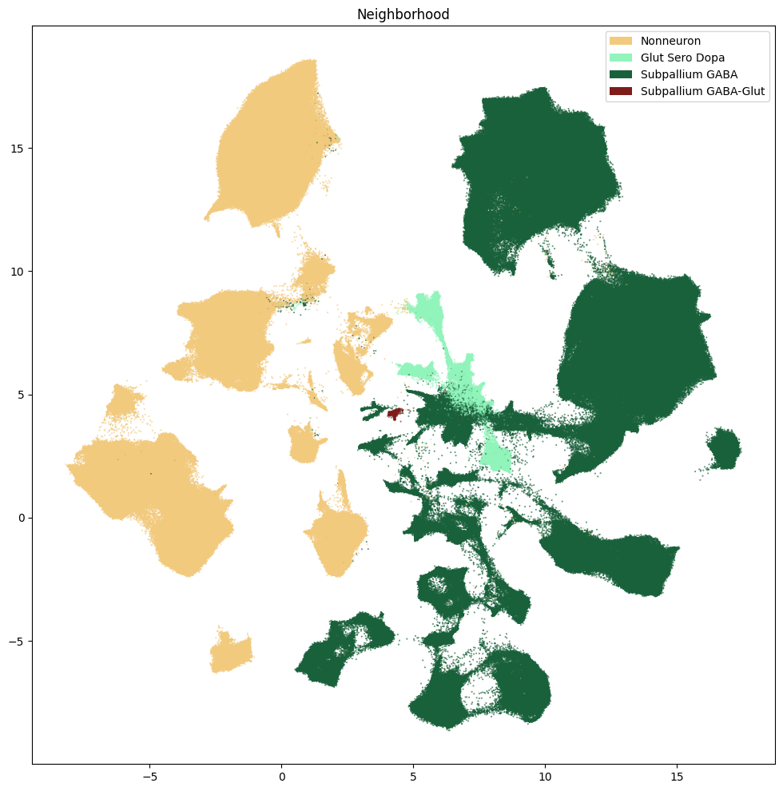
fig, ax = plot_umap(
cell_extended['x'],
cell_extended['y'],
cc=cell_extended['Class_color'],
labels=cell_extended['Class'],
term_orders=cell_extended['Class_order'],
fig_width=12,
fig_height=12
)
res = ax.set_title("Class")
plt.show()
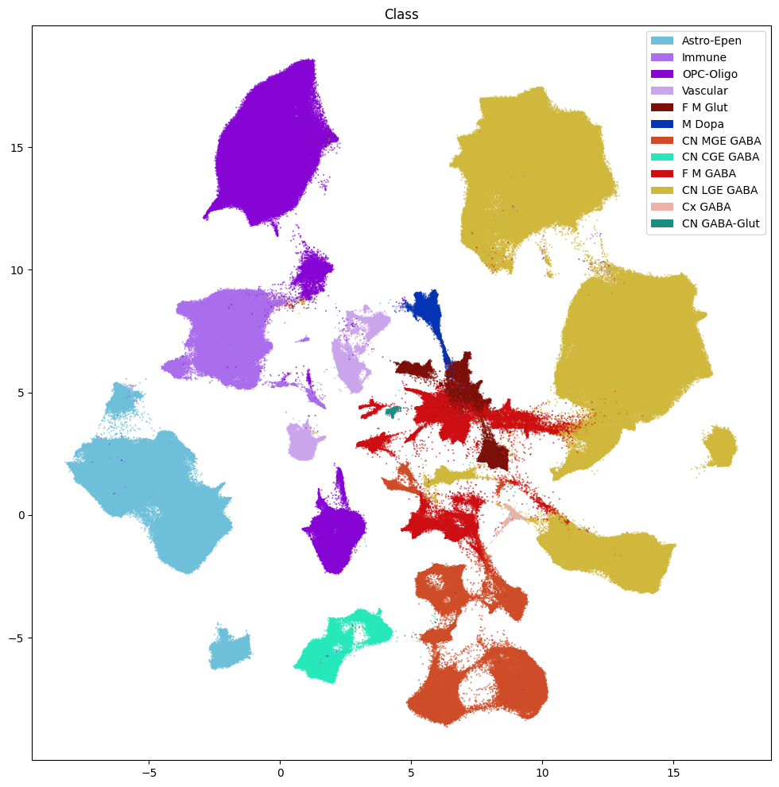
fig, ax = plot_umap(
cell_extended['x'],
cell_extended['y'],
cc=cell_extended['Subclass_color'],
labels=cell_extended['Subclass'],
term_orders=cell_extended['Subclass_order'],
fig_width=12,
fig_height=12
)
res = ax.set_title("Subclass")
plt.show()
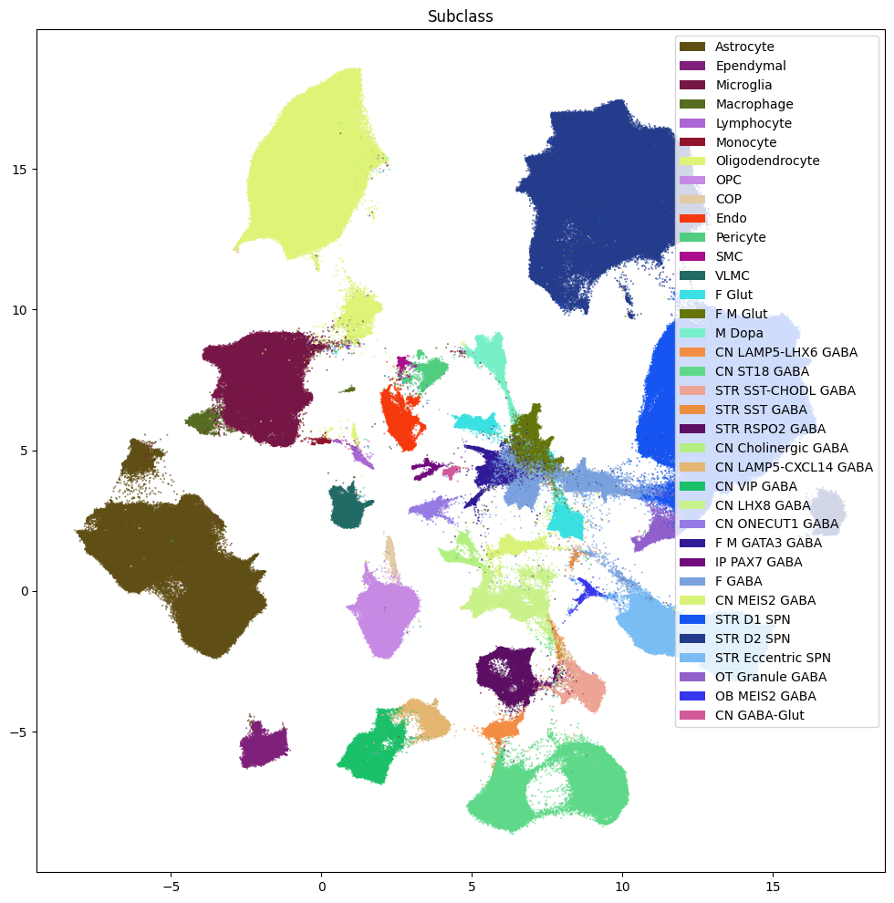
fig, ax = plot_umap(
cell_extended['x'],
cell_extended['y'],
cc=cell_extended['Group_color'],
labels=cell_extended['Group'],
term_orders=cell_extended['Group_order'],
fig_width=18,
fig_height=18
)
res = ax.set_title("Group")
plt.show()
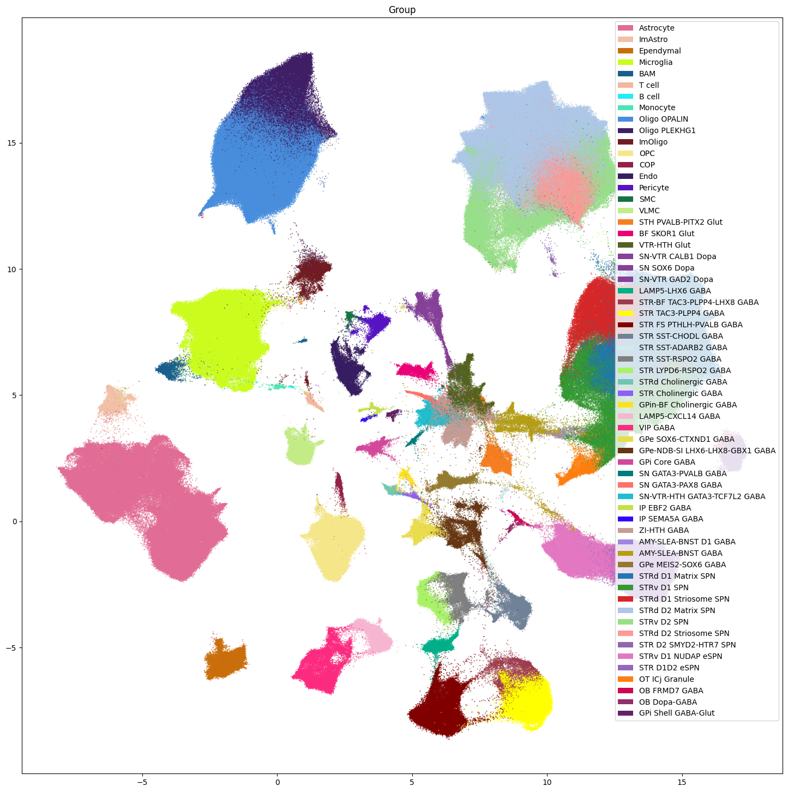
Note that we do not plot the cluster level here. Comparison of the clusters across species is not recommended and any cross species analysis should use the Group level at the lowest. Clusters should only be used when looking at individual species as we do below.
Aggregating cluster and cells counts per term per species.#
Let’s investigate the taxonomy information a bit more. In this section, we’ll create bar plots showing the number of clusters and cells at each level in the taxonomy. We do this on a per-species basis as the number of clusters and cells as between species comparisons of clusters is not recommended.
First, we need to compute the number of clusters that are in each of the cell type taxons above it. We do this for each species.
# Count the number of clusters associated with each cluster annotation term
species_term_with_counts = {}
for species in ['Human', 'Macaque', 'Marmoset', 'All']:
if species == 'All':
species_mask = np.ones(len(membership_with_cluster_info), dtype=bool)
else:
species_mask = membership_with_cluster_info['cluster_alias'].str.startswith(species)
term_cluster_count = membership_with_cluster_info[species_mask].reset_index().groupby(
['cluster_annotation_term_label']
)[['cluster_alias']].count()
term_cluster_count.columns = ['number_of_clusters']
term_cell_count = membership_with_cluster_info[species_mask].reset_index().groupby(
['cluster_annotation_term_label']
)[['number_of_cells']].sum()
term_cell_count.columns = ['number_of_cells']
term_with_counts = cluster_annotation_term.join(term_cluster_count)
term_with_counts = term_with_counts.join(term_cell_count)
species_term_with_counts[species] = term_with_counts[~pd.isna(term_with_counts.number_of_cells)]
Below we create a function to plot the cluster and cell counts in a bar graph, coloring by the associated taxon level.
def bar_plot_by_level_and_type(df: pd.DataFrame, level: str, fig_width: float = 8.5, fig_height: float = 4):
"""Plot the number of cells by the specified level.
Parameters
----------
df : pd.DataFrame
DataFrame containing cluster annotation terms with counts.
level : str
The level of the taxonomy to plot (e.g., 'Neighborhood', 'Class', 'Subclass', 'Group', 'Cluster').
fig_width : float, optional
Width of the figure in inches. Default is 8.5.
fig_height : float, optional
Height of the figure in inches. Default is 4.
"""
fig, ax = plt.subplots(1, 2)
fig.set_size_inches(fig_width, fig_height)
for idx, ctype in enumerate(['clusters', 'cells']):
pred = (df['cluster_annotation_term_set_name'] == level)
sort_order = np.argsort(df[pred]['term_order'])
names = df[pred]['name'].iloc[sort_order]
counts = df[pred]['number_of_%s' % ctype].iloc[sort_order]
colors = df[pred]['color_hex_triplet'].iloc[sort_order]
ax[idx].barh(names, counts, color=colors)
ax[idx].set_title('Number of %s by %s' % (ctype,level))
ax[idx].set_xlabel('Number of %s' % ctype)
if ctype == 'cells':
ax[idx].set_xscale('log')
if idx > 0:
ax[idx].set_yticklabels([])
return fig, ax
Now let’s plot the counts for each of the taxonomy levels above Cluster.
for species in ['Human', 'Macaque', 'Marmoset']:
fig, ax = bar_plot_by_level_and_type(species_term_with_counts[species], 'Class')
fig.suptitle(f"{species}")
plt.show()
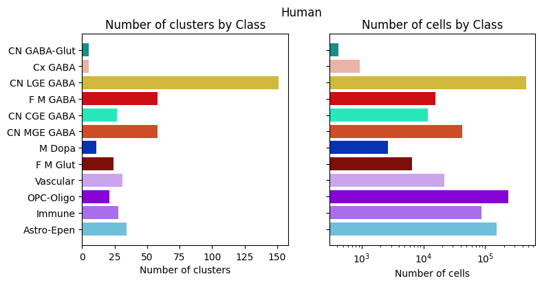
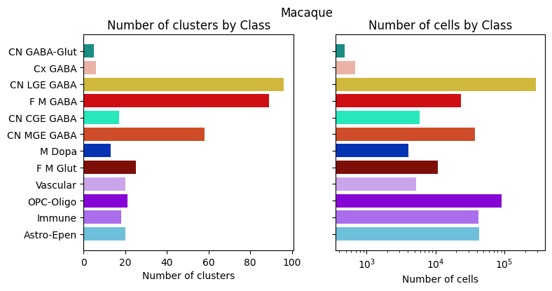
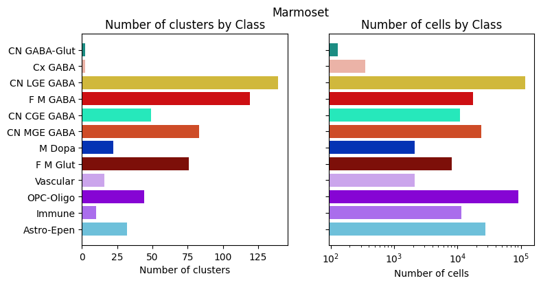
Visualizing the BG taxonomy#
Term sets: Neighborhood, Class, Subclass, and Group define the cross-species taxonomy. We can visualize the taxonomy as a sunburst diagram that shows the single inheritance hierarchy through a series of rings, that are sliced for each annotation term. Each ring corresponds to a level in the hierarchy. We have ordered the rings so that the Neighborhood level. Rings are divided based on their hierarchical relationship to the parent slice. We use the number of cells in each taxon to define the angle of the taxon in the sunburst diagram.
levels = ['Neighborhood', 'Class', 'Subclass', 'Group']
df = {}
# Copy the term order of the parent into each of the level below it.
all_term_with_counts = species_term_with_counts['All']
all_term_with_counts['parent_order'] = pd.NA
for idx, row in all_term_with_counts.iterrows():
if pd.isna(row['parent_term_label']):
continue
all_term_with_counts.loc[idx, 'parent_order'] = all_term_with_counts.loc[row['parent_term_label']]['term_order']
all_term_with_counts = all_term_with_counts.reset_index()
for lvl in levels:
pred = all_term_with_counts['cluster_annotation_term_set_name'] == lvl
df[lvl] = all_term_with_counts[pred]
df[lvl] = df[lvl].sort_values(['parent_order', 'term_order'])
fig, ax = plt.subplots()
fig.set_size_inches(10, 10)
size = 0.15
for i, lvl in enumerate(levels):
if lvl == 'Neighborhood':
ax.pie(df[lvl]['number_of_cells'],
colors=df[lvl]['color_hex_triplet'],
labels = df[lvl]['name'],
rotatelabels=True,
labeldistance=1.025,
radius=1,
wedgeprops=dict(width=size, edgecolor=None),
startangle=0)
else :
ax.pie(df[lvl]['number_of_cells'],
colors=df[lvl]['color_hex_triplet'],
radius=1-i*size,
wedgeprops=dict(width=size, edgecolor=None),
startangle=0)
all_term_with_counts.set_index('cluster_annotation_term_label', inplace=True)
plt.show()
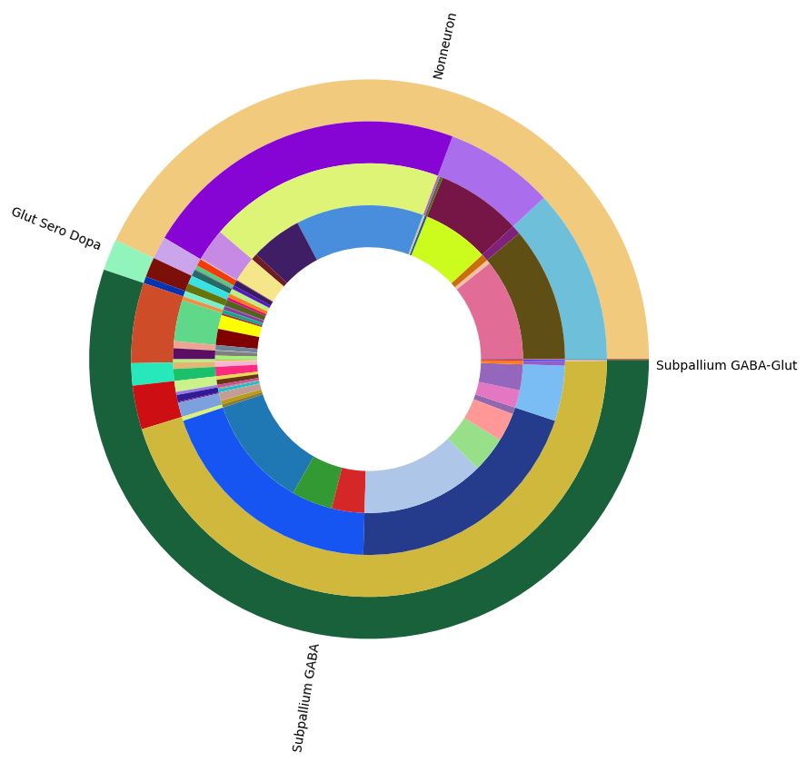
In the next tutorial, we show how to access and use HMBA-BG gene expression data.
To see how this taxonomy can is used in spatial transcriptomic data, see the take look at the HBMA-BG Spatial Slabs and Taxonomy notebook.